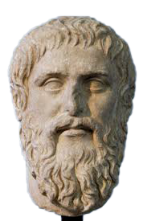
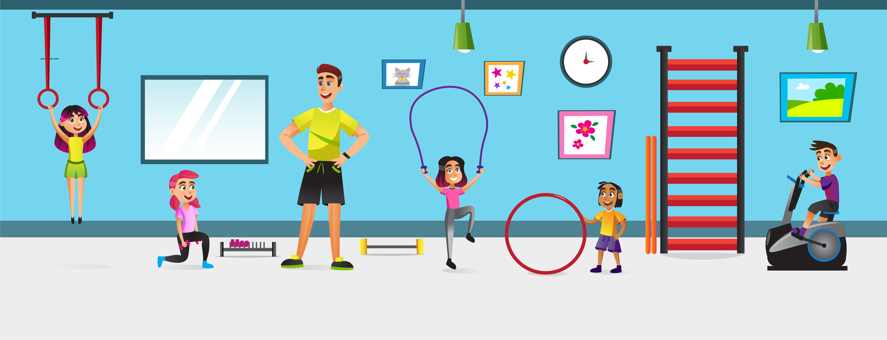
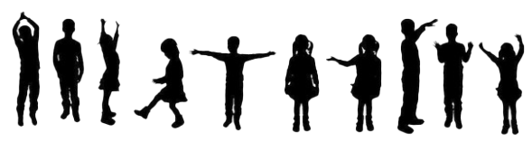

Psicomotricidade
Unidade 1 | Aula 1

Disciplina | Psicomotricidade

Apresentar os conceitos básicos além do percurso histórico da Psicomotricidade por mais de um século.

psicomotricidade, história e origem da Psicomotricidade
Ao iniciarmos este estudo sobre a psicomotricidade, devemos abordar os estudos que há mais de um século permitiram compreender essa área do conhecimento.
Toda a área do conhecimento tem em sua base estudos de várias outras áreas que se associam com o objetivo de organizar um corpo teórico que dará suporte às pesquisas que serão realizadas em seu âmbito.
(MARINHO et.al,: 2007, p. 57).
Em psicomotricidade não é diferente. A história da psicomotricidade já representa mais de um século e, com certeza, iremos muito mais longe nas relações entre o corpo e o nosso psíquico.
O termo Psicomotricidade apareceu pela primeira vez com Dupré (neuropsiquiatra)
significando um entrelaçamento entre o movimento e o pensamento.
... ele já chamava a atenção sobre o desequilíbrio motor, denominando o quadro de debilidade motriz
(OLIVEIRA: 2007, p. 28).
Surgem os primeiros estudos no campo psicomotor ao se constatar que, sem que o cérebro esteja lesionado ou com a lesão claramente localizada, algumas disfunções causavam distúrbios da atividade gestual, da atividade práxica.
Segundo a Associação Brasileira de Psicomotricidade, a partir da necessidade de encontrar uma área que explicasse esses certos fenômenos clínicos que se nomeiou, pela primeira vez, a palavra PSICOMOTRICIDADE, em 1870.
Pensadores como Platão (347 A.C.) defendiam que o corpo era o local de passagem da alma/espírito e Aristóteles (322 A.C.) endossava a tese de que
certa quantidade de matéria – o corpo –
moldava a forma – a alma.
(MARINHO et. al, 2007, p.55)Busto de Platão. Cópia em mármore do busto de Platão feito por Silanião, ca. 370
Imagem: Wikipedia
Suzanne Masson (1985, pág. 11) esclarece que os médicos foram os primeiros a estudar o assunto. Julian de Ajuriaguerra realizou importantes trabalhos sobre o desenvolvimento psicomotor e psicológico da criança e mostrou a importância da genética e pela maturação. No entanto, é a Dupré que devemos os trabalhos iniciais relativos ao problema de evolução e suas perturbações.
Ernest Dupré tornou precisa as diferentes etapas do desenvolvimento psicomotor e mostrou distúrbios que podem surgir no decorrer desse desenvolvimento.
Foi ele quem descreveu a debilidade motora, destacando certas dificuldades motoras, que não correspondem a lesões do sistema nervoso.

Ernest Dupré (1862-1921)
Imagem: Wikipédia
Outra corrente chamou a atenção para o conceito psicomotor, agora sob o aspecto pedagógico. Nesse campo da educação, Montessori, Freinet e Decroly, procuraram utilizar a sensorimotricidade e a psicomotricidade como base de sua pedagogia.
A partir de estudos propondo exercícios físicos motores ou psicomotores adaptados às crianças deficientes, percebeu-se a ligação que havia entre a Educação Física e os métodos que poderiam se aplicar aos casos patológicos.
Cercou-se então do apoio de professores de Educação Física, colocando essa área do conhecimento na base de interesse pela psicomotricidade.
Outros autores contribuíram de maneira positiva e esclarecedora.
Anita J. Harrow (1972) faz uma análise do homem primitivo que tinha o desafio de sobrevivência ligado do desenvolvimento psicomotor.
Imagem: vimeo.com/244526979
Jean Piaget (1987), estudando as estruturas cognitivas, descreve a importância da motricidade.

Imagem: Wikipédia
Maurice Merleau-Ponty (1971) menciona que o homem é uma realidade corporal, ele é seu corpo.

Imagem: Wikipédia
Para a Associação Brasileira de Psicomotricidade, é a ciência que tem como objeto de estudo o homem através do seu corpo em movimento e em relação ao seu mundo interno e externo.
Para Vayer, é uma forma de terapia que pode incluir técnicas psicossomáticas, métodos expressivos de relaxamento, atividades lúdicas, ou seja, processos de ação inspirados na psicanálise e psicoterapia.
(apud FONSECA: 2004, p. 24).
Psicomotricidade é a estratégia de intervenção psicopedagógica que utiliza o movimento como um meio e não um fim em si mesmo.
(BARRETO, 2004)
Apesar dos conceitos relatados, Vitor da Fonseca acredita que a definição de Psicomotricidade ainda é multidimensional, apresenta uma orientação científica heterogênea. Ainda para esse autor, o termo é carregado de uma toxionomia e tipologia difusa.
Você já observou os alunos em aula ou quando estão brincando no recreio?
Oliveira (2007) coloca que eles se movimentam, se agitam. Podemos observar também que correm, brincam e participam de jogos.
Verificamos também que algumas, apesar de apresentarem uma inteligência normal são mais “desastradas”, isto é, derrubam coisas quando passam, tem os movimentos mais lentos e têm até dificuldades em participar de atividades como jogos e brincadeiras.
O autor ainda nos alerta que algumas crianças em sala de aula não conseguem segurar firmemente um lápis, apresentam uma letra ilegível. Estas sentem-se perdidas, por exemplo, quando se exige o conhecimento de direita-esquerda. Também, é possível observar, em alguns casos, dificuldades em manusear uma tesoura.
Aspectos motores estão relacionados aos movimentos que essas crianças fazem.
Conhecer esses aspectos se faz necessário para elaborarmos conteúdos que atinjam os objetivos propostos em nossas aulas.
É necessário que os profissionais das várias áreas do conhecimento, como a Educação Física e a Pedagogia, tenham competência para trabalhar as possibilidades que a psicomotricidade nos mostra.
Trabalhar aspectos como a educação motora, a reeducação motora, a inclusão de todos nas atividades, o trabalho com jogos, brincadeiras e o desenvolvimento corporal da criança são exemplos dessas possibilidades.
O movimento trará uma consciência corporal no educando a partir do momento em que conseguir se perceber como corpo que sente e interage com o outro.
Artigo: Psicomotricidade – Uma Visão Pessoal | Vitor da Fonseca
O artigo trata da questão transdisciplinar da Psicomotricidade e das investigações a que se propõe.
Foto Ernest Dupré. Disponível em: https://fr.wikipedia.org/wiki/Ernest_Dupr%C3%A9 Acesso em: Jan. 2020.
Imagem Anita J. Harrow. Disponível em: https://vimeo.com/244526979 Acesso em: Jan. 2020.
Copyright©2021, Faculdade OPEN. Todos os direitos reservados.
É proibida a reprodução e distribuição total ou parcial deste material, com ou sem fins lucrativos, em qualquer meio, sem prévia autorização.